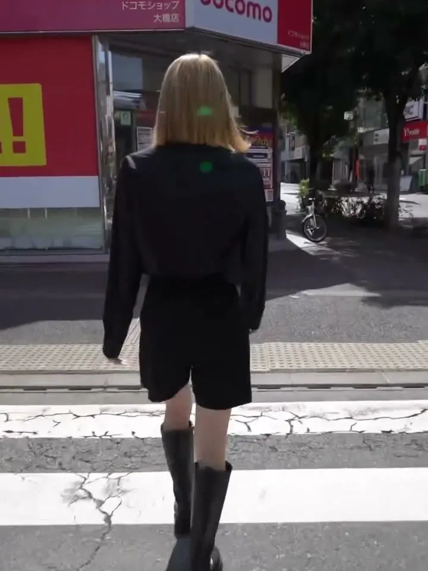
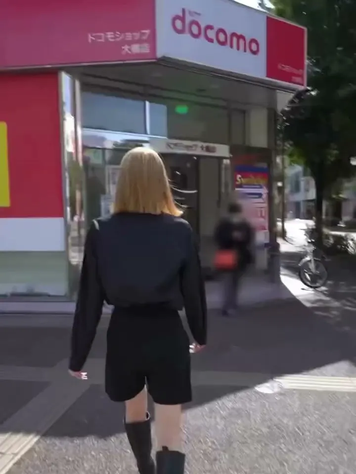
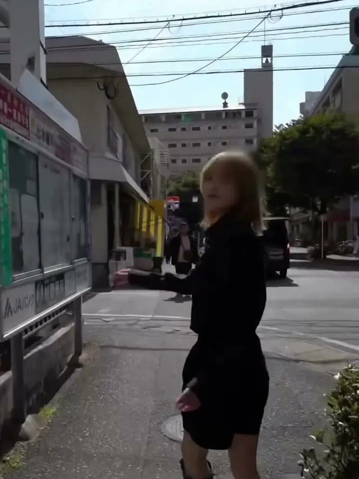
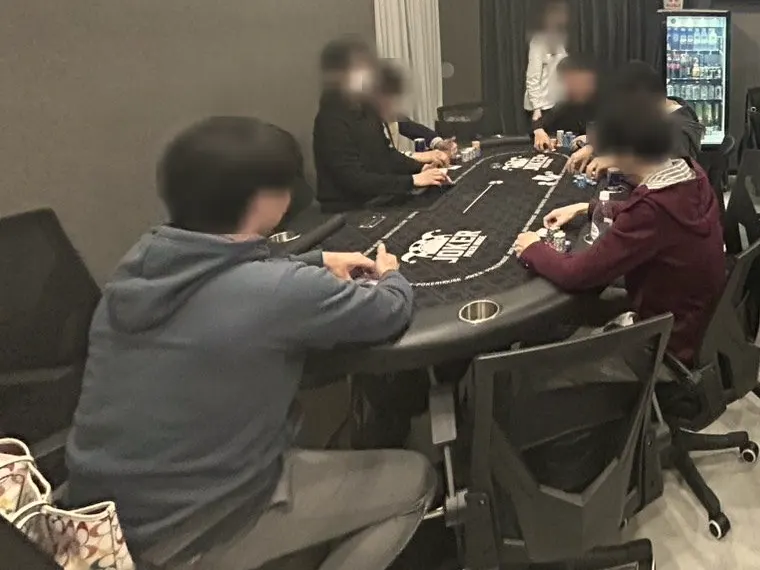

店舗情報・アクセス
西鉄大橋駅の西口から、ゆっくり歩いて2分ほど。迷わないように、駅からの道を写真で順に並べました。

店舗情報
電話は営業時間内にどうぞ。駐車場は隣の立体駐車場が使えます。
- 店名
- JOKER POKER HOUSE
（ジョーカー ポーカーハウス） - 住所
- 〒815-0033
福岡市南区大橋1-13-12 2F - アクセス
- 西鉄天神大牟田線「大橋駅」西口から徒歩2分
- 営業時間
- 平日 15:00〜24:00
土日祝 12:00〜24:00 - 定休日
- 不定休
- 駐車場
- 隣の立体駐車場（タイムパーク
大橋駅前1丁目）60分100円・ 最大800円 - SNS
- 公式LINE、X、Instagram
大橋駅からの道順
写真は、駅の西口から店の扉までの順番です。
大橋駅の西口を出て、まっすぐ進みます 
横断歩道を渡ります 
docomo の前を通り過ぎます 
docomo の看板の角を左へ曲がります ラーメン屋さんの隣のマンションです 
マンションの階段を上がります 
ロゴのある扉が JOKER の入口です 到着です。
扉の先が受付です。
店内にあるもの
ポーカーテーブルのほかに、順番を待つ間に座れるソファがあります。
- ポーカーテーブル
- 受付カウンター
- 待合のソファ
- ドリンクの冷蔵庫
- トーナメントの時計のモニター
